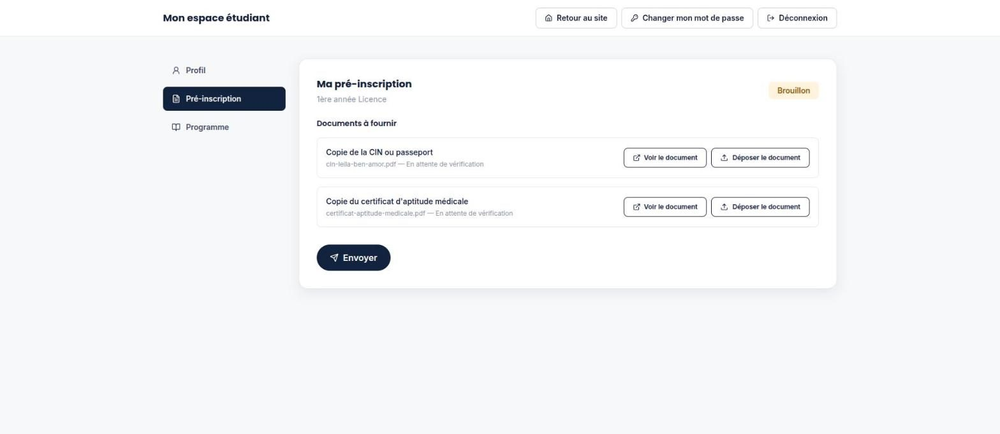
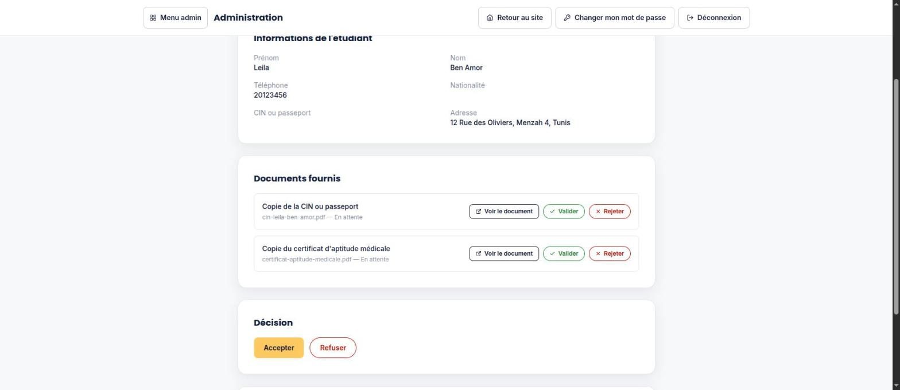
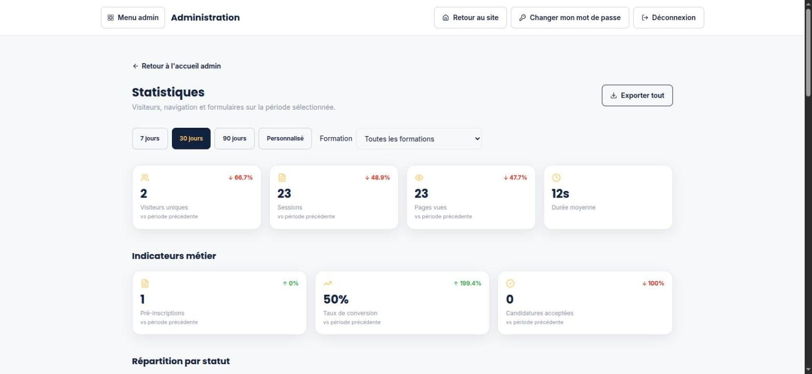

The website and admissions platform of a private nursing school: two public sites in French, English and Arabic, online pre-registration, a student area and an admissions back office.
3languages, including Arabic right to left
2public sites: university and executive education
5admin modules with separate access rights
12e-mail templates in the school's colours
At a glance
SupSanté is the web platform of a private higher-education school of nursing sciences. What began as a static brochure site is now a complete application covering the whole admissions cycle, from a first visit to the final decision.
An entry page leads to two public sites: the university site for the nursing degree and the Executive Education Center for health professionals in continuing education. Prospective students pre-register online and upload their documents, follow their file from a personal student area, and the admissions team reviews each file in a back office until it is accepted or refused.
All public content is available in French, English and Arabic, with the Arabic version laid out from right to left, forms included. The site, the student area and the back office all work on mobile.
Who it's for
Prospective students
Discover the school and its programmes in their language, check admission requirements and scholarships, and pre-register online.
Applicants and students
Upload the required documents, follow the status of their file and, once accepted, see their study programme.
Admissions team
Review files document by document, request missing pieces, record decisions and inform applicants by e-mail.
School management
Manage administrator accounts and their access, switch the public sites on or off, and follow visits and pre-registrations.
The problem it solves
A brochure site only
The original site could present the school but could not take applications. Pre-registration and supporting documents are now collected online, attached to each applicant's file.
Visibility for applicants
An applicant needs to know where their file stands. The student area shows its status and the state of each document at any time.
Structured review
Each file follows the same steps, from document checks to a recorded decision, with the right e-mail sent to the applicant at each step.
Insight into the site
Visit and form statistics are built into the back office, so the school can see how visitors become applicants.
Main features
Two public sites
A university site and an executive education site with their own identity, reached from a shared entry page; each can be switched on or off from the back office.
Three languages
French, English and Arabic on every public page, with a full right-to-left layout in Arabic.
Online pre-registration
A guided form for identity, contact details, secondary-school diploma and chosen programme, with document upload; an account is created from the file.
Student area
Account confirmed by an e-mail code, password reset, profile, document upload and live tracking of the file status.
Study programme
Once the file is accepted, the student unlocks the programme: 6 semesters and 180 credits, with the modules of each semester.
Admissions back office
Filterable list of files, review of each document, missing-document alerts, accept or refuse with a mandatory reason, archive and Excel export.
Executive education enrolments
Continuing-education registrations are handled in the same way, from the list to the decision e-mail.
Administrators and access
Administrators join by e-mail invitation and only see the modules they are granted; removing an administrator needs a second person's approval, and every action is logged.
Built-in statistics
Visits, traffic sources, most viewed pages, form completion and conversion to pre-registration, filtered by period and programme and exportable to Excel.
Editable legal page
The privacy policy is written in a rich-text editor in the back office and published on both sites.
How it works
Discover the school
A visitor browses the university or executive education site in French, English or Arabic and reads about programmes, admission and scholarships.
Pre-register
They fill in the pre-registration form; a student account is created and confirmed with a code sent by e-mail.
Upload documents
In the student area they see the documents required for their programme, upload them and submit the file, which then locks for review.
Review by the school
An administrator checks each document, validates or rejects it, and sends an alert if a piece is missing.
Decision
The file is accepted, or refused with a reason; the applicant receives an e-mail either way and the file can be archived.
Start of studies
Once accepted, the student's programme unlocks in their area, semester by semester.
Technologies
Interface
Next.js and ReactServe the public sites, the student area and the back office from one web application.
Tailwind CSSStyles the pages, including the mirrored right-to-left layout for Arabic.
next-intlHandles the French, English and Arabic versions of every page.
React Hook Form and ZodPower the forms and check what users enter before it is sent.
TipTapRich-text editor used to write the privacy policy.
Server & APIs
Node.js with ExpressProvides the API used by the sites, the student area and the back office.
TypeScriptUsed on both the interface and the server for consistent, checked code.
MulterReceives the documents uploaded by applicants (PDF and images).
Data
MySQLStores accounts, files, documents, programmes, administration logs and visit statistics.
SequelizeMaps the application's data to the database.
E-mails & exports
NodemailerSends the branded e-mails: verification codes, acknowledgements, alerts and decisions.
ExcelJSProduces the Excel exports of files and statistics.
Security
JSON Web Tokens in cookiesKeep students and administrators signed in, with access rights checked on every request.
bcryptProtects stored passwords.
Helmet and rate limitingAdd standard web protections and limit repeated requests.
Preview
University site home page, with language switch and online registration.

Student area: required documents uploaded and awaiting review.

Back office: validating each document before the decision.

Built-in statistics: visits and pre-registration indicators.
What it brings
One admissions process
From the first visit to the decision, every step happens in the same platform, with a clear status for each file.
Clear for applicants
Applicants know which documents are expected, what is missing and where their file stands, in their own language.
Less manual work
Document review, reminders and decision e-mails are handled in a few clicks instead of separate messages.
Controlled administration
Access by module, two-person removal of administrators and an action log keep the back office accountable.
Data the school owns
Visit and conversion statistics are collected by the platform itself, without an external analytics tool.